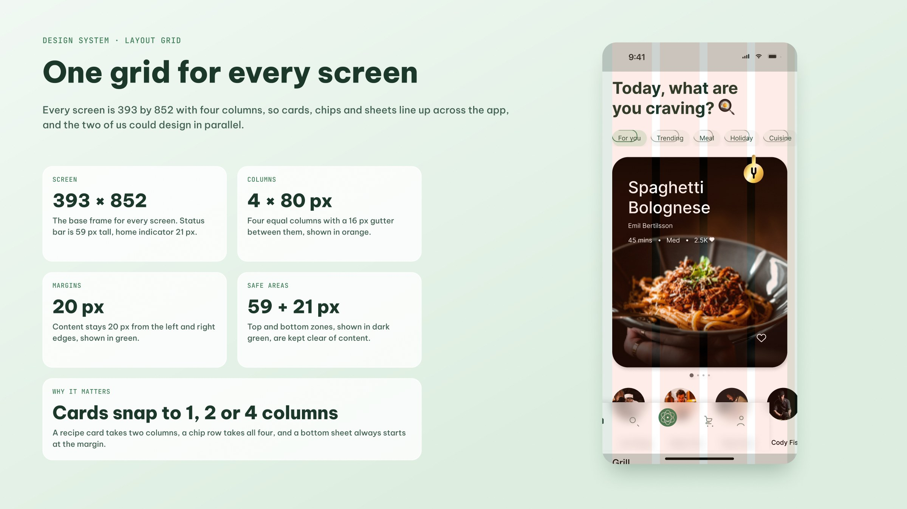
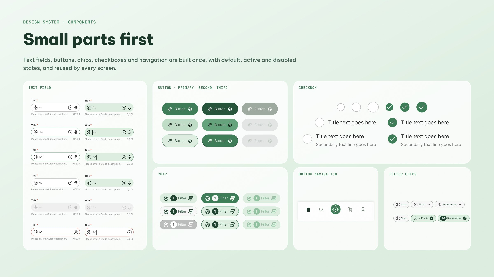
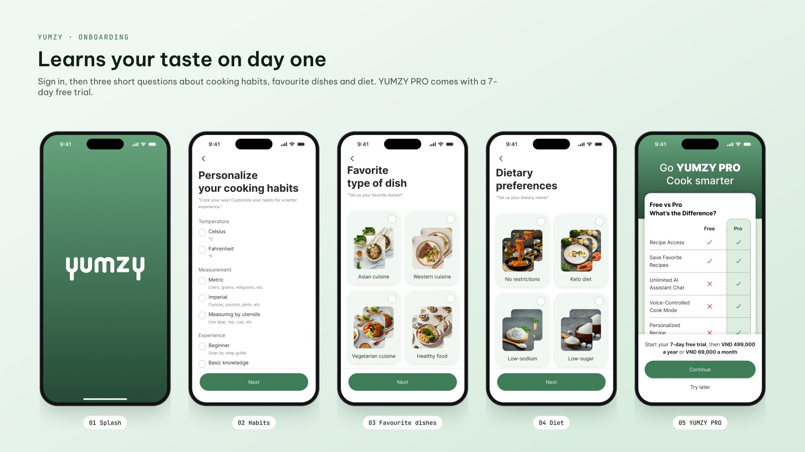
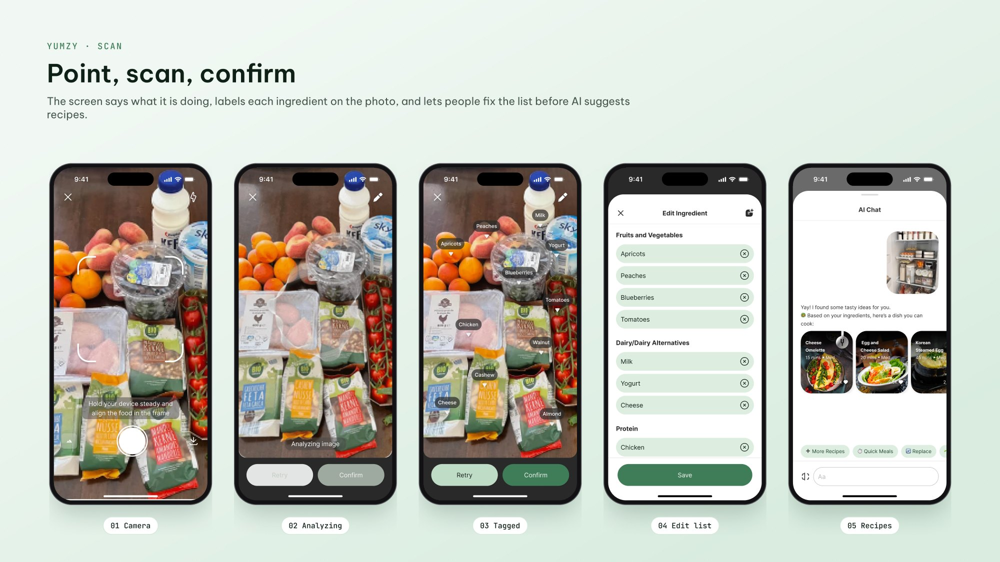
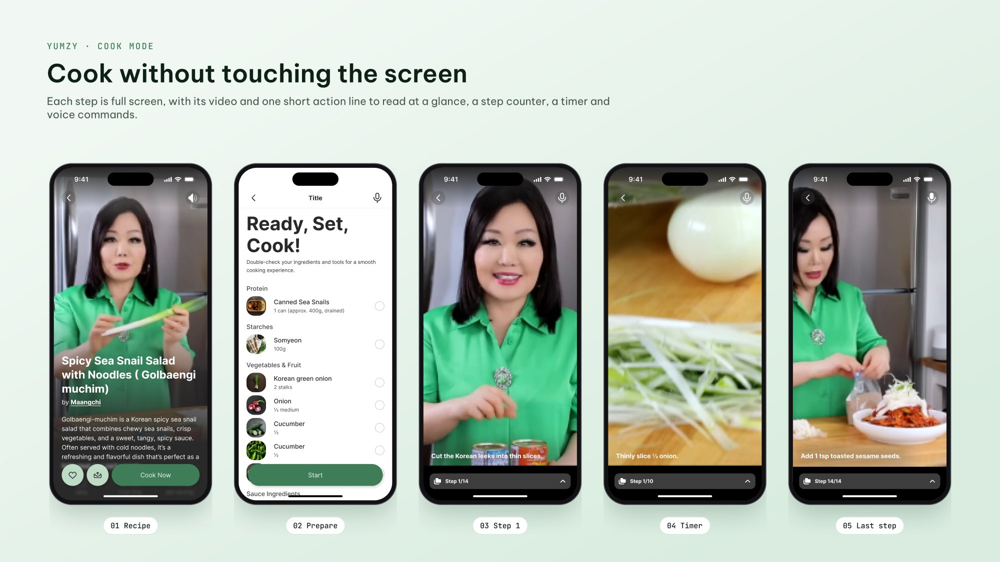
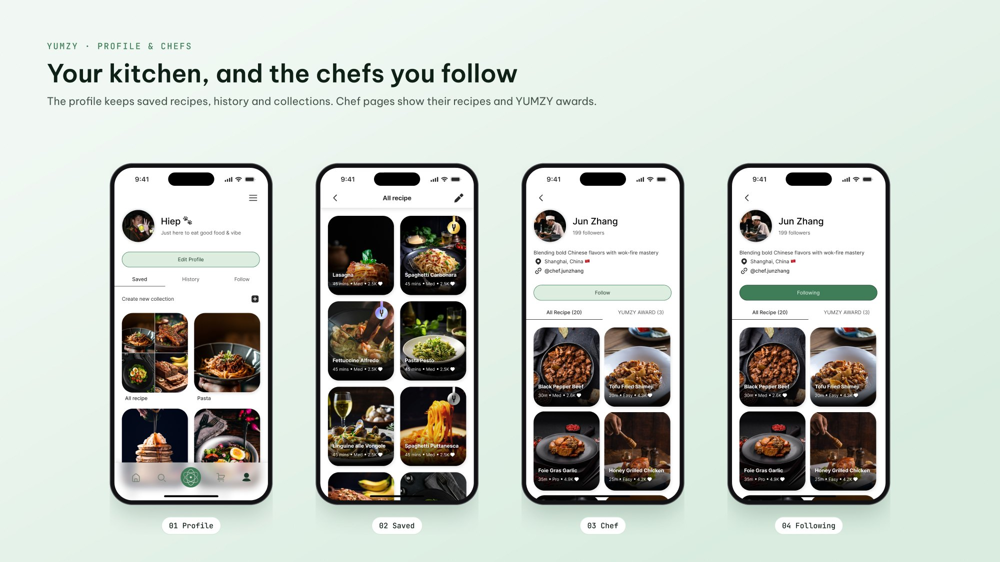
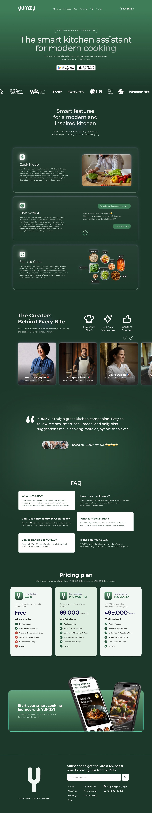
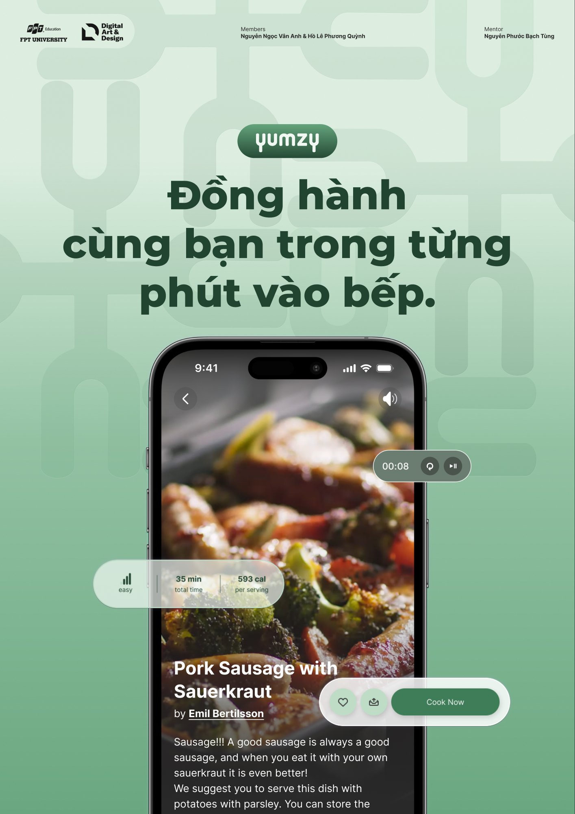
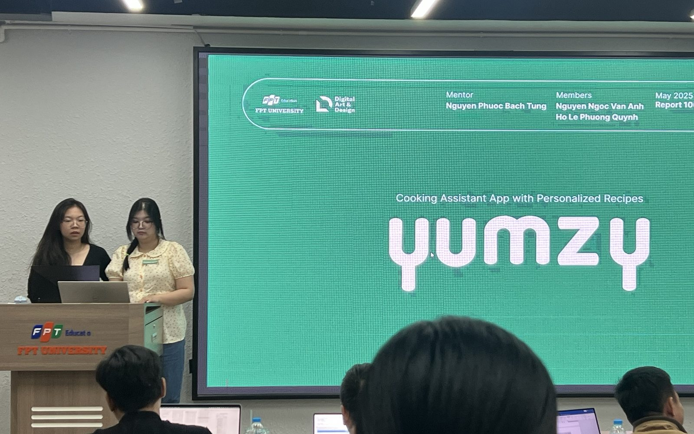

A cooking app that answers the daily question: what can I cook today, with what I already have?
The 30-second version
ProblemWhat to cook, and how to keep up
Beginner cooks aged 23–35 struggle to choose a dish, then to follow the recipe while cooking.
My partResearch, writing, UI, strategy
Three research objectives, personas, How might we, user flows, wireframes, prototype and UI, in a team of two.
Key ideaThree AI features, three moments in the kitchen
Scan when you do not know what to cook, Chat AI when you need ideas, Cook Mode while you cook.
OutcomeFinal report, May 2025
A full prototype, a landing page, a TVC and a booth at the graduation exhibition.
YUMZY in 44 seconds
The app video we made for the launch campaign (the TVC in section 10). It has sound.
01
The problem and our hypothesis
Beginners struggle to decide what to cook, and then to follow the recipe while they cook.
Our users are beginner cooks aged 23–35. The hardest moment is switching between reading the recipe and actually preparing the food.
Problem statement
What to cook, and how to keep up
Beginners often struggle to decide what to cook and find it hard to follow recipes while cooking.
Hypothesis
Short, vertical, step by step
If instructions come as short vertical videos with step-by-step guidance, beginners will feel more confident and finish more recipes.
Research goal
Find the real blockers
Identify the key challenges beginners face when searching for and following recipes online, and how video could make it easier.
The market around it
Eating out is part of daily life in Vietnam. These are the figures we used in the project report:
17%of Vietnamese people eat out every day
30%eat out 3–4 times a week
70%eat out at weekends instead of cooking at home
Source: 2024 Vietnam Foodservice Market Report, as cited in our report.
The reasons: work pressure and long hours, a lack of cooking skills in young families, eating out as a way to relax, and delivery apps such as GrabFood and ShopeeFood that make not cooking very easy. Meanwhile, recipe apps were estimated at USD 5.8 billion in 2024, with a forecast of USD 14.27 billion by 2033 (about 10.5% a year).
02
Research: three questions
Video is for inspiration. Text is for cooking.
I ran descriptive research around three research objectives (RO). Each one ended in a short list of key insights.
RO1
Choosing a recipe and cooking it
- Users often do not know what to cook, especially when tired, busy or short of ingredients.
- Choosing a dish creates decision fatigue, so cooking feels like a burden.
- They search in two moments: planned (before shopping, weekly prep) and reactive (hungry at night, empty fridge).
- Vague or overly detailed steps and missing prep lead to mistakes, and some quit mid-cooking, which lowers motivation next time.
RO2
Where they look, and in what format
- Google and websites first; YouTube and TikTok are rising; apps such as Cooky, Tasty and Yummly help with planning.
- TikTok for fast inspiration, YouTube for technique, websites and apps for doing it.
- Video for learning, text for cooking: text is quicker to scan and has no ads in the way.
- Good photos motivate. People need a smooth path from discovery to decision to cooking.
RO3
How they pick a recipe
- Quick and easy, with few, cheap ingredients that are easy to find.
- Top criteria: time, difficulty, cost, health, familiar taste, serving size.
- Photos, reviews and trust weigh heavily; ratings and comments lower the risk of failing.
- Serving size, substitution tips and clear steps raise success and confidence.
What changed after researchThe hypothesis was half right. Short video helps people choose and learn, but while cooking they want a short line of text they can read at a glance. So the app uses both: short video to discover a dish, and in Cook Mode each step is one short action line over its video.
03
Who we design for
Beginner cooks aged 23–35 in cities, who live on their phones and have little time.
Demographic23–35 years old
Any gender, medium to high income.
GeographyCities
Use varies with the local food culture and habits.
MindsetBusy, but health comes first
Tech-savvy; already use fitness trackers, meal planners and AI chatbots.
BehaviourA smart kitchen assistant
Look up recipes, share dishes, enjoy AI and video guidance.
Three personas
Three personas keep the whole range in mind: someone new to the kitchen, someone who loves cooking but has no time, and a parent who cooks every day.
Persona 1
Beginner Home Cook
The main user of YUMZY
Does not know what to cook, gets lost in long recipes, and gives up when a step goes wrong.
- Needs: suggestions from what is at home, one clear step at a time, and help when hands are busy.
Persona 2 · Busy Cooking Enthusiast
Josh Kim, 26
Mid-level manager · Seoul, Korea
Loves international food. Cooks in the evenings and at weekends, turns on Cook Mode to follow each step, and orders imported ingredients in the app.
- Pain: no time to shop; hard to find trusted imported ingredients.
- Needs: detailed recipes with clear video, quick ingredient ordering.
Persona 3 · Stay-at-home Mom
Trương Ngọc Linh, 30
Homemaker and small business owner · HCMC
Cooks three meals a day for a family of four with two small children, orders ingredients early in the morning or late at night.
- Pain: juggles housework, children and a business.
- Needs: balanced family recipes with the right portions; buying exact amounts.
04
What already exists
Everyone has recipes and videos. No one helps with “what is in my fridge?”
We looked at four groups: video platforms and three popular cooking apps. For each one we noted what works, what is missing, and what YUMZY should take from it.
pick a competitor
| Competitor | Strengths | Gaps | What YUMZY takes from it |
|---|---|---|---|
| Video platforms | YouTube, TikTok: huge libraries, quick search, relatable and inspiring content, many languages. | No recipe or ingredient tools, no structured path, easy to get distracted, content is not always reliable. | Keep the pull of video, but put it inside a step-by-step path. |
| Kitchen Stories | Step-by-step visual guides, Cooking Mode, recipes from your fridge, adjustable portions and units. | No image or voice scan of ingredients, no real-time AI help, limited languages. | Step-by-step cooking is the baseline. Add photo scanning and live AI. |
| Tasty | Free and varied recipes, video tutorials and Cook Mode, smart search filters, personal suggestions. | No ingredient recognition, limited portion control, few regional or traditional recipes. | Personal suggestions plus ingredient recognition, with room for local dishes. |
| Crème | Step-by-step video, the Sous AI assistant (paid tier), automatic shopping lists, a beautiful interface. | Few languages, limited local recipes, no image or voice input. | Put AI in the main flow, with photo and voice input, and keep the shopping list. |
The gapNone of them combines recognising ingredients from a photo, a real-time AI assistant, voice support and local dishes. That became YUMZY’s position.
05
From insight to idea: How might we
Every feature in the app starts as a question.
I turned the insights into How might we questions, grouped by the three moments of the journey, and gave each one a concrete idea.
Choosing and preparing
Pick the right recipe, have the ingredients ready
- HMW help users choose what to cook from the ingredients they have?
→ Suggest dishes from the ingredients the user gives (Scan, Chat AI). - HMW show whether a recipe fits their taste?
→ List every ingredient and the amount needed. - HMW help them prepare before they start?
→ A prep checklist plus short videos on preparing each ingredient. - HMW help them plan shopping from chosen recipes?
→ Add to grocery list, grouped by aisle: vegetables, meat, dry goods.
Cooking
Instructions that are easy to follow
- HMW write steps that are clear, not wordy or vague?
→ One step at a time: one action plus one clear visual. - HMW help them know which step they are on?
→ Cooking Mode: each step full screen with a Next button, and a progress bar. - HMW help them resume after the phone locks or they leave the app?
→ Save the current step and ask “Continue cooking?” on return. - HMW make recipes usable when hands are busy?
→ Voice control.
Platform and format
The best of TikTok, YouTube and the web
- HMW combine the strengths of TikTok, YouTube and websites?
→ Short video to introduce a dish, details on tap, a full video recipe for cooking. - HMW serve people who prefer reading and people who prefer watching?
→ Recipes that switch format: video with text, or text only.
06
Three AI features, three moments
Each feature answers one moment in the kitchen, not a list of features for its own sake.
The How might we ideas came together as four features, one for each moment of the journey:
“What can I make with this?”Scan
Take a photo of your ingredients; AI recognises them and suggests recipes.
“I have no idea what to eat”Chat AI
Suggestions based on taste, ingredients at hand and diet goals.
“My hands are busy”Cook Mode
Step-by-step guidance with video, timers and voice, from start to finish.
“I buy too much”Shopping list
Add a recipe’s ingredients and buy exact amounts to save money and waste less.
07
Design system
One grid, one typeface, one set of components for every screen.
We set the foundations before drawing screens, so the two of us could design in parallel and still stay consistent.
Layout grid393 × 852
4 columns of 80 px, 20 px margins, 16 px gutters. Status bar 59 px, home indicator 21 px.
TypographyInter
Nine styles from H1 48/56 to caption 11/19, in five weights from Light to Black.
Spacing4 → 120 px
One spacing scale for padding and gaps.
ColourAmazon
One green for the brand, Flamingo and Tango as accents, plus feedback colours and a neutral ramp.



Components, from small parts to features
Buttons, inputs, chips, tags and toggles come first. Recipe cards, chef cards, search, filters, the profile and the YUMZY PRO paywall are built from them, and so are the feature parts: the scan shutter, bottom sheets, the AI chat input and the Cook Mode timer.


08
Structure and user flows
Five main sections, and every path ends at a recipe.
Search has four ways in: the search bar, filters, recommendations and Scan. All of them lead to the same results and the same recipe detail, so people learn one pattern. Each flow also has a way out when something fails: try another photo, change the keyword or filters, or ask the AI.
Sitemap
Home leads to five main sections. Recipe detail is where every path ends.
- Home
- All recipes
- Category tags
- Every path ends hereRecipe detail
- Search
- Filter
- → Search results
- For you
- → Search results
- ScanAI reads ingredients from a photo
- → Search results
- Search bar
- Search results
- → Recipe detail
- Shopping list
- All items
- Chat AI
- Recipes in the reply
- → Recipe detail
- Profile
- Saved, Follow, History, Settings
Tap to open the full diagram
User flow: Scan
Take or pick a photo. If the AI recognises the ingredients, the user checks the tags and confirms, then the app moves into AI Chat with matching recipes. If not, they try again.
- SearchTap Scan
- Camera or gallery?
- GalleryGalleryPick a photo
- → Analyzing image, then detecting ingredients
- Gallery
- CameraCameraCapture the ingredientsA frame guide: hold the phone steady
- AnalyzingAnalyzing image, then detecting ingredients
- Ingredients recognized?
- NoCannot recognize ingredientTry again with a new photo
- Try again→ Tap Scan
- No
- YesCheck the tags on the photoEach ingredient is labeled. Edit the list, Retry or Confirm
- ConfirmAI ChatMatching recipesThe app moves into AI Chat with the ingredients filled in
- Pick a recipe
- DoneRecipe detail
Scan answers the question "what can I cook with what I have?"
Tap to open the full diagram
User flow: Search
Autocomplete helps finish the keyword. A query that needs AI goes to AI Chat; a normal one shows results. No result points to another keyword or to the AI.
- Tap the search bar
- Type a dish, ingredient or chefAutocomplete suggestions appear
- Pick a suggestion?
- NoKeep typingUntil the keyword is complete
- → Press Search
- No
- YesThe suggestion fills the bar
- Press Search
- Needs AI?
- NoAny results?
- NoNo resultTry a different keyword, or Ask AI
- → Keep typing
- No
- YesResult listTabs: All, Recipe, Chef
- → Pick a recipe
- No
- YesAI ChatAI asks for more detailsFor example the season or where you live
- AI replies with recipes
- Pick a recipe
- DoneRecipe detail
Tap to open the full diagram
User flow: Filter
Preferences open in a bottom sheet. The button shows how many recipes match before applying.
- SearchTap Filter or Preferences
- Bottom sheetFilter optionsCrave, Diet, Avoid, Categories, Time
- Select optionsThe Save button shows the live result count, for example 88 results
- Apply the filterReset clears every option
- Any results?
- NoNo resultsAdjust filters, or Ask AI
- → Filter options
- No
- YesFiltered resultsPick a recipe
- DoneRecipe detail
Tap to open the full diagram
User flow: Recipe overview and Save
From a recipe, the user can cook, add the ingredients to the shopping list, ask the AI, share, or save it to a collection.
- From Home, Search, Scan or ChatOpen a recipe
- Recipe overviewStory, time, level, caloriesIngredients and Instructions tabs
- What next?
- Add to cartIngredients go to the Shopping list
- Chat AIAsk about this recipe
- Share recipeShare sheet
- Save to a collection
- Save
- Bottom sheetCollections
- New collection?
- NoChoose a collection
- → In Profile, Saved
- No
- YesCreate new collectionType a title
- SavedIn Profile, Saved
- CookCook modeStep-by-step, hands-freeTimer per step, voice commands
- DoneDish cooked
Tap to open the full diagram
09
UI: from opening the app to a finished dish
A calm green interface where the food photos do the talking.
Click any image to see it larger.
Onboarding
The app learns your taste first
After sign-up, three short questions ask about cooking habits, favourite types of dish and dietary preferences, so suggestions fit from day one. The YUMZY PRO offer comes with a 7-day free trial.

Home and Search
“Today, what are you craving?”
Home opens with a question and tabs: For you, Trending, Meal, Holiday, Cuisine. Search covers dishes, ingredients and chefs, with recent and popular searches and quick filters for Scan, time and preferences.

Scan
Point, scan, confirm
A frame guides the photo. The screen says what is happening (Analyzing image, Detecting ingredient), then labels each ingredient on the photo. Retry and Confirm stay disabled until detection finishes, and the list can be edited before searching.

AI Chat
A chef to ask, not a search box
Suggestion chips (Cook in One Pot, Quick & Easy Meals, Ingredient in Season) help start the chat. When a question needs context, the AI asks back, for example which season it is and where you live, then answers with recipe cards.

Recipe and Cook Mode
Cook without touching the screen
A recipe shows the story, time, level and calories, with Ingredients and Instructions tabs. Cook Mode follows the research: each step is full screen, with its video and one short action line on top to read at a glance, a step counter, a timer, and voice commands while your hands are busy.

Save, share, shop
Keep it, send it, buy it
Save opens a bottom sheet of collections, with an option to create a new one. Share uses the system share sheet. Add to cart moves a recipe’s ingredients into the shopping list.

Profile and chefs
Your kitchen, and the chefs you follow
The profile keeps saved recipes, history and collections. Chef profiles show their recipes and YUMZY awards, with a Follow button.

10
Marketing: a plan for launch
Designing the app was half the job. The other half was getting people to hear about it.
The plan targets people aged 20–35 in big cities who struggle with cooking or deciding what to cook. It runs in three phases: get the first 20,000 downloads, keep users coming back with AI cooking challenges, then build a community around #MyYumzy.
Landing page
A dark green landing page for the three features, reviews, pricing and common questions. Scroll inside the frame to read it.
YUMZY · landing page

The exhibition
At the graduation exhibition, the booth carried the same look: an A2 poster and tent cards with a QR code.


11
What I took from it
Graded with a final report in May 2025, and the start of how I work today.

- Test the hypothesis, do not defend it. Research showed video helps people choose but text helps them cook, so Cook Mode uses both.
- Start from a moment, not a feature list. Planned and reactive searches, cooking, and shopping each got their own answer.
- How might we keeps ideas honest. Every feature can point back to an insight.
- Every AI feature needs a way out. When the scan fails or a search finds nothing, the next step must be obvious.
- Foundations first. A shared grid, type scale and components let two designers work at the same time without drifting apart.